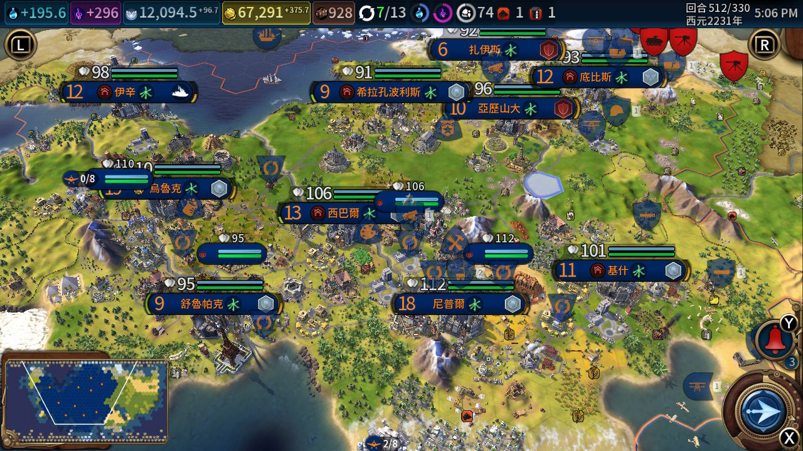

2024农历年
books
- ✔ 《逃离中国》张伯笠
- ✔ 《檀香刑》莫言
- 高密方言相当多——家什、缠磨、草鸡、乍煞、眼睛里杀得紧、撕拔撕拔、喷香、喝粘粥、“汗水已经溻透了他的脊背”、腚垂子、挤咕眼、“德国人横行霸道太强梁”、锅背的太监、脊背微锅、“小甲这个膘子”等等等等。说个无关的，最近看“用现代医学解释中医”时发现土话里表达“伤口溃烂”的“Fa Wu”居然对应中医的另一个词发物。
- 《明朝那些事儿》当年明月
- ✔ 【朱元璋篇】
- 京师原来是首都（元大都）的意思，这才明白京师大学堂是“首都”大学堂
- 新版九部，等看完需要的就看1566剧
- ✔ 【朱元璋篇】
- ✘ 骆玉明古诗词课
- 学了十几年诗，头一次真的进入诗歌，可能跟最近读了上面的书头一次融入历史有关
- ✔ 《伊豆的舞女》川端康成
- ✔ The Joy Of Mathematics《课堂上学不到的数学》
- 根号√￣来自radix的r
- 蒙蒂霍尔问题这种面试时的脑筋急转弯概率题在概率日常章节里有（这个很有意思，YouTube上比如Kai博士的视频想看没看）
- 开篇关于素数能否整除讲得很好，比如3或9只要被除数各位加起来=3或9就能整除；还有素数回文数之类刷题时常用的内容
- ✘ Jerusalem: The Biography《耶路撒冷三千年》
- ✘ The Code of Capital《财富背后的法律密码》
- 十来块钱买来，台湾的出版社
- ✘ 《置身事内》
- 也是讲义来的，图表和注释很丰富，值得研读
- ✘ 《乡土中国》费孝通
- 是他在西南联大和云南大学所讲“乡土社会学”时的上课内容，原来是在咱学校的课件，又刚读过莫言的乡土文学，这下不得不看了。“这里讲的乡土中国，并不是具体的中国社会的描绘，而是包含在具体的中国基层传统社会里的一种特具的体系，支配着生活的各个方面。”
- 《秦汉史》
- ✘ 吕思勉
- 秦✔ 楚汉✔ 汉✘
- 读起来很舒服，大篇幅引用史记
- ✘ 林剑鸣（跟孙皓晖一样是西北大学的）
- ✘ 吕思勉
- ✔ 《中华人民共和国宪法》
- ✘ The Plague, Albert Camus
- ✘ 《萨满神歌与北方文化记忆》高长江
- 讲的都是满族和蒙古族这些游牧民族的歌
- ✘ 《交响世界：开启交响音乐欣赏之门》李近朱
- 从五月超时到九月把这没看完的五本书（还有希腊/雅典、波斯）还回去一共才10块罚金
- Beginning Lua with World of Warcraft Addons
- ✔ Chapter 1 3 4
- ✘ Chapter 5 XML and Frames
- 戰爭事典
- 人類的歷史就是戰爭的歷史。
- 跟袁騰飛找到一個很有趣的視角，圖書館借的歷史我看不下去，但我對戰爭感興趣。
- ✔ 方方日记
- 疫情两年后囫囵看完了这六十篇，不负责任地在日记里扩散朋友转发的不加考据的悲剧确实可恶，尤其是在人心惶惶的瘟疫初期，除此之外我认为整体很温和，只是她作为写作者的一份日记资料，仅此而已。我甚至觉得跟我今年写满一整年的日记大差不差，区别在于我记录我本人她记录在整个武汉的见闻。日记的价值仅限于提供主观的片面资料，只不过她的影响力裹挟着肮脏的另一种片面淹没了她自己。人的一生就是在走出偏见，罗翔这话把这些个事概括全了。
- ✔ 一句顶一万句，刘震云
- 写回旋镖故事的能力太顶级了，中国的百年孤独？
- cosmos Carl Sagen
- 第二次世界大戰戰史，李德·哈特 & 钮先钟
- 英國人寫的，據說寫東線的筆墨較少，且幾乎沒寫中國戰場，但是評價最好，所以從這本讀起構建大的二戰畫面
- 第二次世界大戰史，K·蒂佩尔斯基希
- 德國人寫的，並不是非要都讀完，只是想玩明白大戰略遊戲，戰爭事典63講戰間期德軍發展的書找不到資源，沒想到找到了評價這麼好的兩本書
movies
- ✔ 猛龙过江The Way of the Dragon
- 李小龙自编自导自演和武术指导
- ✔ The Wicker Man 1973 柳条人/异教徒
- 不错的邪教/惊悚片
- ✔ JFK刺杀肯尼迪1991
- 一个District Attorney地方检察官追查凶手的故事，因为不了解古巴危机的年代所以略感无聊，影片暗示CIA和FBI有牵连刺杀，美国反卡斯特罗的民意有些像今天反华禁TikTok
- ✔ 大秦帝国之裂变
- 比老三国差一些，服化道不错，但故事有欠缺，比如人物脸谱化严重，很单薄，小说作者孙皓晖
- 认同这个差评，之后看大明1566或者东周列国春秋篇
- ✔ 超级大国民
- 湾湾出品，楊孟軒推荐，关于白色恐怖被迫害的人，整部影片没几句台词，想到了The Shawshank Redemption那个自杀的老人
- ✔ 2012
- 2009年？银灰色二手北京现代，
- ✔ Ring午夜凶铃/七夜怪谈
- 贞子，跟去年看的美版差又不差
- ✔ 你想活出怎样的人生
- 1937同名小说，宫崎骏新电影，改编自2017年改编漫画
- ✘ Four Lions
- ✔ 东北告别天团，一坨
- ✔ 东北告别天团2，大便
- ✔ 间谍过家家代号白Spy × Family Code: White，国内首映，4.20提前十天
- 笑点就是一个一个误会，像春晚小品，最有意思的是阿尼亚憋屎
- 西国间谍Loid+职业杀手Yor+逃出实验室的实验品Anya+实验品大白熊狗Bond
- ✔ 九龙城寨之围城
- 九龙城寨这个历史题材很有意思，但战力设定太不合理
- ✔ 末路狂花钱
- 比预想的好
- Thelma and Louise末路狂花我去年看过
- ✔ 空中营救
- 劫机（911扭曲受难家属），之前也看过一遍
- ✔ 歌手2024（看了一半，对象走了没会员看了）
- ✔ 坠落的审判
- ✔ 周处除三害
- ✔ 我叫MT（看到TBC看不下去了，前几季的音乐和剧情真是一绝）
- ✔ 异形：夺命舰Alien: Romulus，跟event horizon黑洞表面给我的感觉很像，还不错。
事件视界（英语：event horizon），亦称事件穹界，是一种时空的曲隔界线。
视界中任何的事件皆无法对视界外的观察者产生影响，在黑洞周围的便是事件视界。
在非常巨大的重力影响下，黑洞附近的逃逸速度大于光速，使得任何光线皆不可能从事件视界内部逃脱。
根据广义相对论，在远离视界的外部观察者眼中，任何从视界外部接近视界的物件，将需要用无限长的时间到达视界面，其影像会经历无止境逐渐增强的红移；但该物件本身却不会感到任何异常，并会在有限时间之内穿过视界。 - ✔ 柯南Detective Conan: The Million-dollar Pentagram，纯纯粉丝向，每年一个剧场版都是一个日本地方的旅游宣传片
- ✔ walkabout
- In Australia, when an Aborigine(澳洲土著/'æbə'rɪdʒəni/) man-child reaches sixteen, he is sent out into the land. For months he must live from it. Sleep on it. Eat of(chatgpt说这个of加上conveys a slightly more poetic or ceremonial tone) its fruit and flesh. Stay alive. Even if it means killing his fellow creatures. The Aborigines call it the WALKABOUT(徒步?). This is the story of a "WALKABOUT".
- https://www.asharperfocus.com/Walkabout.html 一个去世的博主，第一次见这种博客。
- ✘ 侏罗纪公园2，纯恐龙冒险比KingKong金刚差远了
- The Great Escape
- ✔ 混沌武士Samurai Champloo（多年以前刘卜语推的，想看星际牛仔记成混沌武士了）
- ✔ 星际牛仔Cowboy Bebop（二周目）
- ✔ Working remotely on Google Colaboratory, CS231N Google Colab Assignment Workflow Tutorial
- ✔ 李宏毅机器学习，四年前看过相当多他的课程，比看stanford的心态是轻松的
- ✔ DreamLeague(BP的時候背景是樂隊的舒緩演奏，這太夢幻了) Season 24 XG拉了坨大的，s14¼決賽tes被t1零封和兩場半決賽，和決賽BLG vs. T1惜敗，后來看ESL XG vs. Gaozu，王莽篡漢
- 台大電機 Prof. 葉丙成 機率與統計 2013
- ✔ part1
- ✔ part2
- ✔ part3 C part5 B
- ✔ 致命录像带7：超越4（鋼之鍊金術師人狗）
- cs231n
- ✔ lecture 1～7
- ✔ assigment 1, 2
- ✔ lecture 8～14
- ✔ lecture 15, 16
- ✔ assignment 3
- ✔ 2019 attention, 2021 self-supervised
- ✔ look back驀然回首，藤本樹，清新動漫版星際穿越
- ✔ 雙城之戰arcane season 2，每季9集看不爽
- ✔ 天启Z，屍潮來了先擼貓，聖母男主降智劇情，比去年玩的walking dead差遠了，喪屍片裡我是傳奇和the last of us比較好
- ✔ 銀翼殺手Blade Runner，去年還是前年看過了
- ✔ Borgen，丹麥政治挺有意思，議會有十幾個黨派的人，北歐五國各國有各國的克朗各有各的匯率，只有一個國家用歐元
- ✔ 雙城之戰2
- ✔ 輻射fallout，season1，爽度大於雙城之戰，最經典的美劇之爽，可是結尾劇情不足以支撐前面讓你爽的伏筆，like權游/越獄/怪奇物語，巔峰還是非架空世界的毒師/better call saul
- ✔ 生命是個奇蹟，Life is a Miracle，塞爾維亞拍蘇聯解體後南斯拉夫內戰，這半年來看過最好的電影，大概是今年最好的一部電影
- 一部未完成的電影
- ✔ 鏖战百万级蟑螂大军（非虚数），心理阴影面积比太平洋还大：年度最折磨最惡心的視頻，比血腥視頻（比如中國的無差別傷人/恐怖襲擊事件，比如血腥電影）更讓我嚴重不適。這個視頻剛刷到的時候沒人看，過了一個周播放量開始暴漲，所有人都在看。
- The Mask變相怪傑 和 地狱男爵Hellboy原來都是黑馬漫畫的超級英雄作品，童年的經典
- cs224n
- ✔ 2023 lecture 1
- ✔ Chiikawa
- 看了十來集，究極泡麵番，226集每集1分鐘內容。只有Hachiware會說話，兩個朋友只有表情、哼唧和肢體動作。
- 藍耳Hachiware是貓，第8集吐hairball，白色Chiikawa，是倉鼠，Chiikawa的朋友Usagi是只黃色傻兔子。
- ✔ 仰泳抹香鲸的博德之门 3 规则讲解，唯一看的攻略视频，想起来两年前玩博德之门 1 还白嫖 vivo 彩印了一整本 dnd 规则书，大几百页，这次说不定也会找来看🐋。
- 海邊曼徹斯特，Manchester By the Sea
- ✔ 天赐之女，The Girl with All the Gifts，有最后生还者的影子，真菌给丧二代供氧，人类被物竞天择自然淘汰很有意思。你不能只在你赢的时候物竞天择，该被淘汰就被淘汰。
- ✔ 听海涌，Three Tears in Borneo，台湾人拍的二战片，台湾作为日本的殖民地被征兵的三个孩子成为战争犯的故事，力度不够，不如拍德军杀犹太人的电影里，像杀狗一样的残忍，也让我又一次想了想台湾人明清移民后近百年作为完全殖民地的身份认同问题，又被老蒋跟老毛一样如出一辙地从50年代到80年代戒严。
想看的课：
- cs224w 圖神經網絡，大論文需要就看，6 个编程作业，3 个 LaTeX 书面作业，不需要拉倒。說是口音很印地，但是有colab和notes很方便。
cs144 計算機網絡，傳統cs課程預計學時說是都是nn課程的兩倍，原來大家對cs231n的評價是“内容相对基础且友好”。
2024WINETER 把Lab4：TCPConnection删了，换成了“Lab4：interoperating in the real world”
感觉这个lab不考察对整个structure的理解，仅仅只是一些算法的实现（有测试用例的话比Leetcode还简单）。要想有收获还是得深入到它的整个源码来思考架构和原理。
Computer Networking: A Top-Down Approach 說是課講得很好。cs143 編譯原理，關鍵課，最後悔疫情在家上課沒正經學的一門。5個編程作業為COOL語言實現一個編譯器，編譯為MIPS匯編在Spim上模擬。
只有够了解才能更加优化。
现在的 AI 架构都有用上编译技术进行中间优化，例如 Tensorflow、TVM，这些东西的本质就是一个内嵌的领域专用程序语言（EDSL）。 还有一个编程范式叫增量计算 （incremental computation），是反应式编程、数据流编程的一种，当节点上有任何数据更新/发送信号，数据相依的路径也会更新，游戏脚本设计、金融系统会用到。 还有树的优化，用元编程把树的走访消融在一块，可以减少快取丢失，浏览器的网页渲染会用得上。光追也有用元编程优化的技术。 所以编译原理学到的东西，不一定真的是要去搞编程语言设计还是编译器开发才用得上，做一些架构设计的时候它的精神本质就是一种编译器。还有编译器工具链的build系统可以对应到很多的设计应用，可以看知乎这篇 https://zhuanlan.zhihu.com/p/375651053 。
数据库：ast，SQL优化器；AI编译器；服务端调优，对runtime，VM，自动GC等的调优。前端工具链，造轮子。汇编语言的设计哲学。cs61c(UCB) projects很有趣
Project1 会让你用 C 语言写一个小程序，20 年秋季学期是著名的游戏 Game of Life。Project2 会让你用 RISC-V 汇编编写一个神经网络，用来 识别 MNIST 手写数字，非常锻炼你对汇编代码的理解和运用。Project3 中你会用 Logisim 这个数字电路模拟软件搭建出一个二级流水线的 CPU，并在上面运行 RISC-V 汇编代码。Project4 会让你使用 OpenMP, SIMD 等方法并行优化矩阵运算，实现一个简易的 Numpy。
总而言之，这是个人上过的最好的计算机体系结构的课程。6.s081用C, RISC-V，這兩門課都要有體系結構基礎，可雲大體系結構老師太爛了，只跟著實驗課老師學了一點電路和模擬知識，所以應該得先補體系結構。(時間多久做難度高的cs162，時間緊就做6.s081 xv6，教授是PDOS的Morris作者頂級黑客)
6.824 分布式系統，老師跟上面一樣。用Go，跟cs231n一樣答案無數力圖自主完成，學過作業系統應該就能完成。
✔ 行尸走肉，电视剧很难看
- ✔ 辩护人，卢武铉（第六共和国），第五共和国
- ✔ 猛禽暴隊：解瘋小丑女，跟芭比一樣爛的女性主義電影
games
- ✔ 星之卡比NS(wii Kirby's Return to Dream Land Deluxe)
- ✔ Undertale
- worst gameplay(STG/shoot 'em up/shmup)
- best storytelling ever.
- ✔ witch on the holy night魔法使之夜，typemoon型月
- 朋友送的，视觉小说，下饭看
- 跟Fate/Stay Night设定大致相同，Fate里英灵殿召唤saber是第三魔法，这作里青子祖父探索第五魔法操作时间
- 声优和战斗演出意外地出色，剧情比fsn强点
- ✔ Degrees of Separation 无聊版森林冰火人
- ✔ BOKURA，双人不同视角的解谜
- ✘ Divinity: Original Sin II
- 原神启动，感谢女友送我的博德之门3
- 兄弟不爱玩回合制战斗，这也曾是我选择玩博德之门1/2而不是神界原罪的原因
- ✔ Ken Follett's The Pillars Of The Earth圣殿春秋
- 极品历史小说，游戏改编得非常非常棒
- ✔ The Escapist 2
- 有趣，但因为玩法重复没动力开新图
- ✘ Rome: Total War
- 想玩得十年了，上次尝试玩是半年多前（和骑砍，但骑砍和大航海时代这种贩子主线都有点玩不动）
- ✔ Feed The Cups
- 做奶茶，比分手厨房好玩
- ✔ Teamfight Tactics
- 魔法大乱斗赛季速通铂金(从s1在北京火速入坑弃坑以来，除了2021年底在日服不知哪个赛季玩过一阵，再拾起来就到现在了，s11画之灵，s12魔法大乱斗)
- ✔ A HAT IN TIME
- A mafia asks for toll, the goal is to collect fuel (sandglass⏳hourglass)
- 玩着像3D卡比
- ✔ 剑侠情缘网络版叁
- ✔ world of warcraft classic(wrath of the lich king)
- ✔ wow retail(11.0)
- ✔ zachtornics solitaire
- ✔ inmost(星露谷和屎大棒chucklefish呵呵鱼)
- ✔ dota2(Defense of the Ancients (DotA),2013 multiplayer online battle arena (MOBA))
- ✔ 雲頂之弈:双城之战2，新賽季一把藍髮小隊拿了個老二，lol自走棋每賽季剛開始時都還是蠻有趣的，但雲頂加入的變異再次提速，前兩個賽季我都是喜歡玩6級7級D出3星的賭狗陣容，現在這種人更多就更難了
- ✔ warcraft3, 1.31(no Reforged)，战役打到一半被 macOS m1 版本的对话 bug 劝退。
- disco elysium
- HoMM英雄無敵3
- ✔ Campaign Long Live the Queen
- ✔ chess
- Mass Effect™ Legendary Edition
- 還在家屬院老房子裡的時候玩過一陣子，看朋友的評測大概得預留出150小時才能玩完這三部曲
- ✔ go home Annie（老e），辣雞 scp，扮演收容人員
- ✔ 无人 there exists nobody（老e），這個恐怖遊戲的中國老街道做得真好，類八番（八號出口的日文名）
- ✔ 笼子（老e），100层多人合作吃人电梯，这游戏不错
- 博德之门3，zzh 放弃考马哲，确实很好玩。
- ✔ OmeTV, Monkey.app
- ✔ Buckshot Roulette，猎枪轮盘赌，单人前两个小时很好玩，多人很有潜力，可已没有以前那样能一起玩火柴人乱斗和 helldiver 的一大群朋友...
- ✔ 南方公园: 真理之杖，没想到 SP truth stick 这么好玩，又是在爸妈做爱的 balls 和 tits 干扰下跟 gnome warlock 打架，又有变异就开始喊 Hitler's speeches 比如 Sieg Heil 的 nazi zombie，又要去 gay 的肛门里拆核弹，还讽刺了 🇨🇦、Abortion、Jesus 和 Jew，有时间可以看看超长的动画。
- ✔ NS文明6
- chd居然文明6和博德3分别打了上千小时，我在忙着实习完找回自我的时候看来大家都有事情在忙。
- 除了能杀时间外一无是处，12-24 平安夜这天本来要跑专利代码，中午打开游戏打完就到晚上了。
- 训练关不知为何，战胜了其他文明没有战争胜利，完成了 3 个火星殖民地研究没有科技胜利。打了五百个回合还没结束，完全没有新内容了，连伟人都刷光了，野怪不会打我，无尽的生产和商人循环。
- ✔ 欧陆风云 4，Europa Universalis IV，打算主玩英国，根据 15c 到 19c 去年写的 timeline，当作 RPG 应该会很好玩。
- 玩不下去转钢丝了，原來不光幕府全戰2，天國拯救Kingdom Come: Deliverance也是這個時代的遊戲，波希米亞王國，所謂中世紀騎士。中2全战也是中世纪（total war medieval 2 LotR Divide and Conquer 魔戒mod看起来超级好玩），在今年结束之前2025.1.28腊月廿九除夕统计一下这些游戏的time period：
- ✔ 永劫無間（網吧跟女友雙排）漫威爭鋒（老e）
- ✔ 燕云十六声（老e和狗雨）比诛仙世界（狗雨）强多了，我工作过了解过的公司里网易给我的印象算是最好的之一了，逆水寒永劫无间梦幻西游，第五人格阴阳师狼人杀蛋仔，年底的Marvel Rivals漫威争锋太牛逼了，比Marvel Avengers做得强太多了，一月份先投网易吧。
- Fallout辐射4，博德3中断，SP通关，等molgen结果的时候来玩玩，评价说是好过本体的Far Harbor冬促没买。
- 至少一年没玩这种接近第一人称的游戏，玩一小时就晕。
- Frostpunk，从刚发售王老菊做视频到现在，断断续续地一直在尝试但没玩下去。跟 11 bits 的 This War of Mine 一样，从 2019 年玩到 2022 年才通。
- macOS玩不了的游戏就有点麻烦，懒得换设备玩。
- ✔ Total War: SHOGUN 2，突然又对幕府全战2有兴趣了，打通几次战役攒10个成就拉倒。
- 幕府（日语：幕府／ばくふ bakufu）是指日本歷史上由征夷大將軍（俗稱幕府將軍，簡稱將軍）領導與統治的武家政權，為日本特有國情下所產生近似「尊王攘夷」的政治體制，從1185年（中国还没到元朝，五代十国南北宋辽金元）源平合戰結束時開始，至1867年明治維新時結束，歷經鎌倉幕府、室町幕府、江戶幕府三個幕府時期，由河內源氏、北條氏、足利氏、德川氏先後相繼統治時間總長682年。
- 实质是武官执政，军政府，🇯🇵说是向来有武官执政的传统。
- 镰仓幕府 Kamakura，室町幕府 Muromachi，德川幕府 Edo是江户即东京/Tokugawa是德川clan。
- ✔ Easy Campaign 用大名统治日本，故事发生在1545年到1600（直到德川幕府结束）的战国时代（游戏里是用哪个氏族统一都行
- 剛發現歐陸風雲4跟幕府全戰2是同一時代的遊戲，其實可以在歐陸風雲裡復刻幕府2故事用大名統一日本
- 大年初二跟妈吵了最凶一架后晚上熬夜通了，买了除九的票，希望今年一切顺利。
- ✔ Who's Your Daddy? 内容略少，小孩太容易死。
- ✔ 看老E直播联机 Nikoderiko: The Magical World 想起来 PSV 唯一玩进去的游戏，雷曼传奇
- roblox shrimp game, KaiCenat玩的鱿鱼游戏(squid game)，感觉不错有空试试
- ✔ plug and play（speed），一堆插头人插来插去
- ✔ amenti（老e），这个游戏真恐怖啊，像我去徐州汉墓那种逼仄的墓室，在金字塔里jumpscare和女鬼叫，通关出来的时候好像英雄萨姆的金字塔
- ✔ Dark and Darker（網吧極速體驗）三角洲（狗雨）
- ✔ drawful 2 英文你画我猜，用浏览器玩，远程的话需要投屏软件比如zoom，或者一群人在一个屋子里看同一个屏幕播放画作，可以自定义主题，只有两种颜色不能换笔
- ✔ dreadout 这个印尼恐怖游戏相当一般，不停jumpscare，除了amenti这种新鲜的题材，亮度超低的让人什么都看不清的游戏我其实都不爱玩，寂静岭2和darkwood这种靠营造恐怖氛围而不是纯靠jumpscare的游戏才是好的恐怖游戏
- ✔ Transformice，老鼠合作搭建运奶酪🧀
- ✔ Spiritfarer®: Farewell Edition，第二次玩还是玩不进去，建造种田跟灵魂培养好感
- ✔ Muse Dash，国产音游，全是二次元语音合成歌曲，不好听
- ✔ Minion Masters，deck building 塔防，全是氪金元素
- ✔ Higurashi When They Cry Hou - Ch.1 Onikakushi，寒蝉鸣泣之时，这两年除了朋友送的魔法使之夜实在看不下去日本视觉小说类型的故事，虽然因为听海涌和幕府全战这些作品越来越有兴趣，但了解得越多后似乎越来越讨厌这个国家了
- ✔ Candle，蜡烛人解谜，画风不错
- ✔ Regions Of Ruin，视角和画风跟kingdom都很像，不过这个RPG比Kingdom系列更好玩
- 全成就了

- 全成就了
- ✔ Darkwood，很牛的恐怖游戏，先打了个prologue有心情再玩
- ✔ Cube Escape: Paradox，锈湖的游戏到目前我似乎只玩了跟女友双人的 The Past Within
- 只能玩chapter1，還不錯，chapter2暫時不玩了（其實今天已經年初三
- Planescape: Torment异域镇魂曲，跟Baldur's Gate是黑岛Black Isle同一年的作品？1999
- Plane原来是位面的意思，2025.1.15尝试，时隔一年3个月第一次接触老板果然让我做了那些我认为他会让我做的（导电），但是这次我跟着自己的思路走，以毕业为核心
- Black Isle Studios黑岛1996成立2003就倒闭了
- ✔ Combat Master，非常轻量，突然想在M1上玩FPS但是CS2不再支持macOS，遂被推荐玩这个，但内容太匮乏且不停劝氪，1小时后退坑，无限循环的CF运输船。
- ✔ BioShock Remastered，记得2017年大一刚买电脑的时候时候玩了infinite，今天（2025.1.16）实在想玩FPS，但deus ex、cod之类的都不太想玩而且不打折太贵，掏出库里的老东西试试看
- 用英文玩了兩年遊戲到現在聽讀narrative還是吃力，這作在海底，跟無限一樣的套路，只多了個hacking系統（無聊的排水管），玩不下去
- ✔ Verdun, Tannenberg坦能堡, Isonzo(意大利和奥匈帝国围绕伊松佐河的战役)
- 发现了好东西，BlackMill这仨一战游戏看起来不错而且都支持M1，诺曼底跟凡尔登规模相比如何？
- 用便宜的凡爾登探探路，據說較新的Isonzo也沒人玩
- verdun很好玩，跟小時候玩的戰地1943的感覺幾乎一樣，都是沒有準星，但這個遊戲的換彈和戰線戰壕trench似乎更真實，verdun人也不多，不過不用湊齊人，bot也不錯。
- 結果2025-1-22開始不停閃退，驗證遊戲完整性也沒用，也許重裝有效，不過準備轉女友送的ARMA3，或者系列其他作品
- L40S跑实验，結果沒權限，暫且改成2080Ti八卡跑實驗。
- ✔ 2025.1.16配好環境下好材料數據
- ✘ 2025.1.17調通8卡後湊合跑一個結果，頭痛不知是因為被感冒還是最近一週落枕和頸椎痛
- HOI4，2020年5月疫情在家摸索了一阵子战线后造了个核弹速通完就没玩了，这次看着小狐狸2024年底刚做的攻略和二战史给它玩明白。
- 成就的價值對我來說應該只在於：激勵我完全探索我熱愛的遊戲。
- 這基於這樣一個道理：如果我熱愛一個遊戲，那遊戲質量應該很棒，那大概率製作組會精心設計成就，以此為引導讓玩家體驗所有內容；
- 如果我不那麼熱愛，成就的價值就是讓我看看探索到底之後最稀有的成就代表什麼遊戲內容。
- 像這種大戰略遊戲，成就能給本來沒有遊戲目標的遊戲一個目標。
- 鋼絲這個遊戲就是我想試著全成就的類型。比歐陸風雲4純表格有趣，又比幕府全戰2每場戰役每個內政都要操作的視角更宏觀。不過真的沒必要全成就，還是得多touch grass。
- ✔ 九球輪盤賭（老e），還挺不錯
- ✔ Football Manager 2021
- 用英文根本看不懂位置簡稱，改成繁中簡中好多了，事隔一年半終於玩得下去了。
- ✔ 安排喜歡的拜仁球員真的很爽，以前捏的自己的臉被女友拿去當小紅書頭像了，這次的遊戲目標是50%成就。43成就后发现这游戏的数值模拟是一坨屎，对进球正儿八经有影响的属性只有acceleration和pace，然后是什么工作投入work rate有个最低标准，甚至有负相关bug属性，挖掘潜能Potential Ability就是分配CA(Current Ability)，最好的培养速度训练方案是完全休息，系统推荐的训练方案均衡发展属性就是一坨屎，弃了把全战战役打掉。
- 還以為強度是戰術強度，結果是體能強度，我說怎麼突然變強連勝，結果踢幾場全受傷不說，還容易吃紅牌。
- ✔ ARMA3
- 跟博得之門3一樣是我收到的女友送的最好的遊戲，這次是年初一600天紀念日禮物
- 把prologue打了，之后有空再玩，想在M1 FPS玩爽应该还是得打凡尔登那系列游戏。
2023农历年
一本书没看，但因为搞了NAS看了一堆电影。
- ✔ 海邊曼徹斯特，Manchester By the Sea，2022年2021年看了無數遍。
- ✔ 咒怨，跟女友一起拉着窗帘看不吓人，伽倻子和俊雄还成为了我俩的梗
- ✔ 美版午夜凶铃Ring，看了录像带七天内都要死/拍照脸会糊，在井里冤死的从电视里爬出来的贞子
- ✔ 危情十日Misery，女粉丝囚禁作家，惊悚
- ✔ 鬼婆onibaba，影片以日本南北朝时期因战乱而出现南北两天皇为背景，以极少的人物出场展现了乱世之中人间更比地狱的惨状。一对婆媳以抢杀逃兵、买卖武器换取粮食为生，某日婆婆儿子的兵友逃了回来，告知婆媳二人男人已战死的消息。面对这个兵友的强壮，寡居多时的婆媳二人皆有心托付，自然年轻的媳妇获得了更多滋润，嫉妒心极强的婆婆试图带上抢来的鬼面具吓吓儿媳，却不料她带上的鬼面具真正属于恶鬼。
- ✔ Ed Stafford First Man Out，第一集德爷跟海豹突击队美国大兵的精彩，其他一般
- ✔ 高山下的花环
- ✔ Pan's Labyrinth
- ✔ Cure1997
- ✔ The Exorcist 1973驱魔人，恐怖片，1949年发生在美国马里兰州的一桩真人真事。被恶魔附身
- ✔ Requiem for a Dream 2000 梦之安魂曲 关于吸毒的癫狂电影，最好的毒品电影
- ✔ The Others 2001小岛惊魂，狗镇的主角安妮·海瑟薇，惊悚大片。非常棒，我看过的第一部以死后人视角看世界的电影，刚开始茫然，不知道自己在哪，抗拒想起死前的悲惨回忆，所谓冤魂就能完全被理解了。
- ✔ The Spacewalker 2017 GER天际行者，很棒的一部俄式太空电影，前铺垫松后紧。很好看，人类第一次太空漫步，不是第一次载人航天。
- ✘ Liang and Lin梁思成·林徽因（全8集）含4集幕后花絮，水瓶很高的人物传记纪录片，记录建筑巨擘梁思成和林徽因的辉煌坎坷的一生，也记录了我国建筑史从无到有到辉煌的过程。https://movie.douban.com/review/9197383/#comments
- ✔ E1梁启超和林长民，伟人，好奇所谓民国学究气浓厚的氛围。
- ✔ E2美国康奈尔宾大艺术学院（现建筑设计学院）耶鲁等辗转读书，回东北大学创办第一个建筑学系，第一次带领中国人研究中国建筑。
- ✘ E3
- ✔ Dogville 狗镇，2003，真的牛逼。
- ✔ Carlito's Way 1993 卡利托的方式，阿尔·帕西诺，“一个意气将近的黑道老大，一个无法舍弃的女人，一段欲罢不能的江湖恩怨，一些无奈背叛的兄弟情义，一个狡诈阴险的律师朋友，一个陷阱，一条路，一笔钱，一把很少用到的手枪，一场无法挽回的人生，一种无能为力的命运，一个情理之中的故事” 很好看，阿尔帕西诺入木三分
- ✔ Mayday/Air Crash，空中浩劫，空难细致调查看不下去
- ✔ Emergency NYC 第一季2023，好看
- ✔ War Horse2011战马，斯皮尔伯格， 好看
- ✔ The American Barbecue Showdown S02 2023美食烧烤，好看
- ✔ Full River Red 2023满江红，张艺谋，没说的。
- ✔ Suzume no Tojimari 2022铃芽之旅，还可以，新海誠太多了。
- ✔ Fall 2022，俩女人攀岩极限运动，故事一般
- ✔ DragonBall 99G，放弃
- ✔ Barbie 2023
- ✔ Django Unchained被解救的姜戈 2012
- ✔ 2009 X战警前传：金刚狼
- ✔ 变形金刚2007
- ✔ Gandhi 1982甘地传，好看的
- ✔ Hotel Mumbai，孟买酒店，1982，印度恐怖袭击，还不错，看完甘地传更能理解了
- ✔ Passangers太空旅客2016，不好看
- ✔ 丹下左膳余话·百万两之壶Sazen Tange and the Pot Worth a Million Ryo一个独眼男人的故事1935，看不下去，一个缺德兄长送给弟弟价值连城的遗物（乌龙故事）
- ✔ 重启人生
- ✔ the sixth sense第六感
- ✔ Thelma and Louise很好看
- ✔ 骆驼祥子
- ✔ 跛豪
- ✔ 春风沉醉的夜晚。
- ✔ 蜘蛛侠平行宇宙12，第一次约会
- ✔ 天注定
- ✔ 时代革命
- ✔ 年会不能停
- ✔ 三大队
- ✔ 古惑仔
- ✔ 消失的她
- ✔ 坚如磐石
- ✔ 河边的错误，还有些很多去电影院看的电影，记不起来了
- ✔ 金刚King Kong，我看过最好看的怪兽片
- ✔ 孤注一掷，跟狂飙一样，太监扫黑
- ✔ 狂飙
- ✔ 奥本海默，造原子弹故事，相当好看
- ✔ 长安三万里，李白故事
- ✔ 天空之城，close约了看，讲了半天cinderella、snowwhite和mermaid，灰姑娘白雪公主美人鱼，不对劲儿
- ✔ Monster (怪物)，校园霸凌 + 狩猎(Mads Mikkelsen)人言可畏误会老师 + 扭曲的友情，同一件事的多个视角很棒的电影
- ✘ stalingrad 1993 决战斯大林格勒，德国视角二战，比日本的硫磺岛家书更反思
- ✘ 0:30 猎杀本拉登2012
- ✘ Letters from Iwo Jima 2006硫磺岛家书，美国拍的日本二战，中途岛战役失利直接宣布了日军在太平洋战场上的失败，负隅顽抗的日军依然坚守日本最南端的小岛—硫磺岛。这个看似不起眼的小岛，却上演了二战太平洋上最惨烈的战争。
- ✘ Argo 2012 亚果出任务，伊朗人质，心灵捕手导演
- ✘ 战争与和平
- ✘ The Story of the Last Chrysanthemum 1939残菊物语，歌舞伎世家音羽屋第六代传人尾上菊之助，女人为男人献身
- ✘ Wings of Desire 1987 柏林苍穹下，柏林由两位天使守护着，一个是对人世疾苦冷眼旁观的卡西尔，另一个是常常感怀于人类疾苦的丹密尔。天使，德国新电影四杰
- ✘ Thunderbolt and Lightfoot 1974霹雳炮与飞毛腿，美国黑色喜剧，评价一般
- ✘ Les Miserables 2012悲惨世界，音乐剧电影版，高雅！
- ✘ The Train 1964战斗列车，故事时代背景是二次世界大战末期，德军眼看大势已去，深黯艺术无价的德国指挥官保罗．斯科菲尔德乃下令将一批法国名画从博物馆搬回德国去。巴黎解放前夕。法国战争片。
- ✘ 红色沙漠1964，Il deserto rosso，关键词“颜色”，意大利片，8.0，“天是紫色的，街是蓝色的，海是黑色的，烟是黄色的，在一片白雾中，走出一个红衣女人，心是灰色的”
- ✘ 大逃亡 The Great Escape (1963) 麦奎恩，逃狱片，据说笑点密集。
- ✘ 碧海蓝天 The Big Blue 1988，美丽的法国/意大利片，讲友谊、爱情、自然。
- ✘ Breathless 1960 筋疲力尽，法国犯罪片，戈达尔首部故事长片，把＂跳接＂这种手法从穿帮上升到了电影语言的领域。“其实都是逼出来的，因为胶片不够，所以只能这样．”？
- ✘ U-571猎杀，2000，战争片，还有BBC的《大西洋之战》，很过瘾。很多战斗细节是编的。1942年4月，二战期间，大西洋上，德军战舰采取“狼群”战术，令盟军损失惨重。S-33的任务是伪装成一艘德军的维修舰，以维修作掩护，从U-571上获取德国最先进的译码设备。
- ✘ In the Heat of the Night 1967炎热的夜晚，美国谋杀片，从容、慢节奏、戏剧张力
- ✘ The Good, the Bad and the Ugly 1966黄金三镖客，意大利Il buono, il brutto, il cattivo ，西部片宗师作品，过瘾，美刀三部曲之一，故事发生在美国南北战争时期。图科（埃里•瓦拉赫 Eli Wallach 饰）是一个图财害命的江洋大盗，因此他被镇上悬赏通缉。布兰迪（克林特•伊斯特伍德 Clint Eastwood 饰）是一个除暴安良的牛仔，他无意中抓住了图科，但嫌赏金不够又掳走了他。
- ✘ wonders of the solar system太阳系奇迹 / 太阳系奇观2010，BBC科普，豆瓣9.5，布赖恩考克斯教授游历地球上一些最令人惊奇的地点，向观众展示和剖析自然法则所造就的太阳系的伟大自然奇观。
- ✘ Time of the Gypsies 1988流浪者之歌，“一个不做梦的吉普赛人就好像没有屋顶的教堂或没有字的书。”一部献给吉普赛人的电影，魔幻的色彩，悲情的人生史诗，库斯图里卡的镜头下男孩成长与巴尔干文化记忆交融为一体，生命遂带着宿命而离奇的味道，漂流与等待、相聚和失散交错离析，在梦与现实、童年与世界的寻觅中碰撞，绚烂而刺痛。
- ✘ Gloria 1980女煞葛洛莉，惊悚、犯罪，美国，“用生活流的写实手法讲述一个极具戏剧性的故事，效果美妙，异常好看，比后来者《杀手莱昂》耐看。大概昆汀也从卡萨维茨的作品里汲取了不少创作灵感吧。”
- ✘ pulp fiction 1994低俗小说，昆汀，非线性，多角度，环。
- ✘ The Theory of Everything 2014 萝莉岛传奇霍金
- ✘ Lincoln林肯传2012
- ✘ The Life of Oharu 1952西鹤一代女，“日本物哀电影”？一个苦命妓女
- ✔ 异种族风俗娘评鉴指南，好像是兄弟22年推荐我看的，记不清了
- ✔ Stranger Things (怪奇物语) 用手机/平板远程VLC连nas看完了，四季全看了，后面两季有点拉，前期巨精彩，跟冰与火之歌（2022年底在商汤时熬夜看的）一样高开低走。
- ✔ 穿条纹睡衣的男孩 The Boy in the Striped Pajamas，啥时候看过了
- ✔ 绝命毒师
- ✔ better call saul，大概是去年看完的吧，已经记不清了
- ✔ 我推的孩子，跟对象异地时看的（大概是第一次异地时）
- ✔ Fate/stay night TV 01-24命运之夜 Reseed在nas上下了个资源，还行，总算是看过了Fate
2023年也玩了很多很多游戏，大部分认真玩的都写测评了，年终时又跟女友沉迷了自走棋音乐赛季。

三国杀玩了一年充了千把块，在23年打了6个赛季排位拿到神赵云之后终于弃坑，只看小半个橙子视频下饭。
2024年5月中旬又因为受伤玩画之灵赛季，给对象的号上了个大师，这俩赛季都是用3星3费阵容赌狗运营一招鲜吃遍天。
旁白
写这个log时是2024-03-03，我们项目有13个人去毕业答辩了，而我还在看gggy直播。
搜了下我老板的导师评价发现是整个浙大计算机最低分...
Name:徐仁军
评星(满分5星) 学术水平:1 科研经费:1 师生关系:1 学生前途:1
导师辨识特征：浙大教师个人主页上没有这个人，办公地点一些隐私的地方，相貌堂堂，一表人才，动若豺狼，静如绵羊，很是崇拜，好词用不过来了
学术水平：一位在招人的老师应该有足以当通讯作者的能力
科研经费：经费蛮多的，但是你得了解是怎么分配的；项目很杂的，你可以投其所好；大力支持学生自主科研，然后采取下文“补助”方式以资鼓励
学生补助：硕博嘛，愿意给他做一作和通讯的给5k，然后会鼓励你再艰辛也要学习，经费不足，东拼西凑钱包掏空也会给你4k的
师生关系：实验室学生两三个，没有想留下的；挺关心学生的，不管多晚都愿意打电话来吵醒，不接还会继续打；导师一手遮天，事无巨细都是一人承包，论文作者有谁以及顺序都不轻易放过
学生前途：耗子尾汁呀
2023-05
Name:徐仁军
评星(满分5星) 学术水平:1 科研经费:1 师生关系:1 学生前途:1
导师辨识特征：数据科学研究中心导师，1404办公室，戴眼镜。
学术水平：学术水平几乎没有，除了博士期间的几篇论文，几乎没有论文。18年进入数据科学中心，之后抢了两篇A会的一作（可以查一下二作，没有这个人，因为他让别人匿名了），其余文章均为靠关系挂名。一直想抢组内学生的一作。五花八门地乱搞，一会要让猴子长翅膀，一会要发cns。
科研经费：到目前为止就是阿里的两个项目。没什么经费，他自己说没钱了。。。
学生补助：按学校标准。但存在拖欠的情况，一般会拖三个月左右。
师生关系：抢一作，和实验室学生关系很僵硬。组内的硕博都不喜欢这个老师
学生前途：可以去他规定的地方实习，钱都给他，然后按学校的补助要求发钱。硕士500，博士800.
2022-04
Name:徐仁军
评星(满分5星) 学术水平:1 科研经费:1 师生关系:1 学生前途:1
导师辨识特征：我的意思是
学术水平：我的意思是
科研经费：科研需要花钱吗？
师生关系：你这是老太太进被窝
学生前途：事到临头各自飞
2021-10
突然发现我在用的版本 (gitbook -V: 3.2.3) 不支持复选框语法 (-[x] or -[ ])，而且从多年前开始开源版的 gitbook cli 就不再更新了，gitbook.com 正在更新的是面向非码农的 high-level 写作云平台。